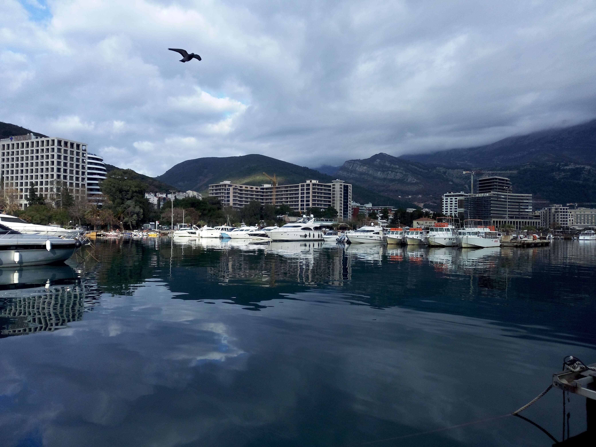

Budva, Montenegro
Montenegro · Adriatic Coast
Set along Montenegro’s sun-drenched Adriatic coast, Budva brings together centuries of history and the relaxed rhythm of Mediterranean life. Its walled Old Town, with narrow stone lanes, historic squares, and terracotta rooftops, reflects the town’s Venetian heritage, while the surrounding coastline opens onto turquoise waters, sandy beaches, and dramatic sea views. Wandering through its historic streets and along the waterfront reveals a destination where cultural character and coastal beauty meet.
Beyond its historic centre, Budva is known for its lively seaside atmosphere, beautiful coastal scenery, and picturesque waterfront. The town's beaches and nearby coastal viewpoints offer visitors opportunities to enjoy the Adriatic landscape from different perspectives. Its historic walls, traditional architecture, and lively streets create an interesting contrast with the modern resorts and cafés along the coast. Budva is also a popular starting point for discovering the surrounding Montenegrin Riviera, with its small beaches, rocky coves, and charming coastal settlements. These photographs capture my personal impressions and memories of Budva, reflecting both its historical character and the natural beauty of the Adriatic coast.